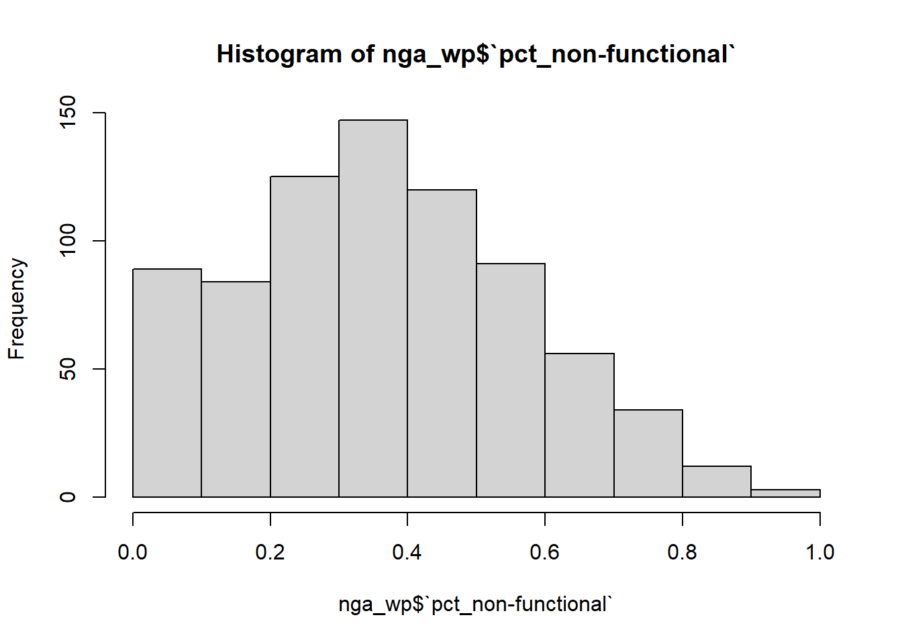
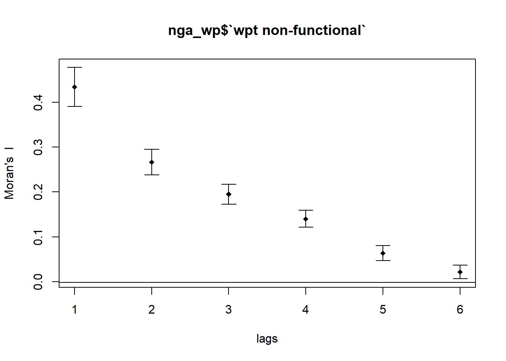

pacman::p_load(sf,tidyverse,tmap,spdep,funModeling)Take-home Exercise 1: Geospatial Analytics for Social Good - Understanding Spatial Patterns of Non-Functional water points in Nigeria
1. Overview
1.1 Background
Water is an important resource to humankind. Clean and accessible water is critical to human health. It provides a healthy environment, a sustainable economy, reduces poverty and ensures peace and security. According to the United Nations, at the current pace the world will not meet the Sustainable Development Goal (SDG) on water. This means that in the year 2030, hundreds of millions of people will still be spending hours to collect unsafe drinking water, especially in rural areas where most of the under-served population currently lives.
Developing countries are most affected by water shortages and poor water quality. Up to 80% of illnesses in the developing world are linked to inadequate water and sanitation. Despite technological advancement, providing clean water to the rural community is still a major development issues in many countries globally, especially countries in the Africa continent.
1.2 The Analytical Question
Apply appropriate global and local measures of Spatial association techniques to reveal the spatial patterns of Non-Functional water points in Nigeria.
2. Getting Started
2.1 Packages Used
The R packages used for the analysis are:
sf: for importing and handling geospatial data
tmap: for creating thematic maps, such as Choropleth maps
spdep: a collection of functions to create spatial weights matrix object
funModeling: a collection of functions related to exploratory data analysis, data preparation, and model performance
tidyverse: a collection of packages for performing data science tasks
The following tidyverse packages will be used:
readr for importing delimited text file
tidyr for manipulating and tidying data
dplyr for wrangling and transforming data
ggplot2 for data visualisation
2.2 Data-sets
The table below shows the two data-sets we will be using:
| Data File | Description | Date Type / Format | Data Source |
|---|---|---|---|
| Geo_Export | Water point data in WPdx+ data set | Aspatial / Shapefile | WPdx Global Data Repositories |
| NGA-ADM2 | Nigeria Level-2 Administrative Boundary (also known as Local Government Area) polygon features GIS data | Geospatial / Shapefile | Humanitarian Data Exchange |
3. Data Wrangling
3.1 Importing Geospatial Water Point Data
Using st_read, we import the “geo_export” shapefile into R and save it in a simple feature data frame format. We also filtered the data-set for records related to Nigeria.
wp0 <- st_read(dsn = "data/geospatial",
layer = "geo_export",
crs = 4326) %>%
filter(clean_coun == "Nigeria")Based on the output message above, the assigned CRS is WGS 84, the ‘World Geodetic System 1984’ which is not appropriate. Therefore, we will transform the coordinates from 4326 to 26391 projection using the st_transform() function. We used EPSG: 26391 as it is one of the Projected Coordinate Systems of Nigeria.
wp <- st_transform(wp0, crs = 26391)
st_crs(wp)Next, we use write_rds() of readr package is used to save the extracted sf data table (i.e. wp) into an output file in rds data format. The output file is called wp_nga.rds and it is saved in data sub-folder.
write_rds(wp, "data/rds/wp_nga.rds")3.2 Importing Nigeria LGA boundary data
We then import the LGA boundary data into R environment by using the code chunk below. Again, we use EPSG: 26391, the Projected Coordinate Systems of Nigeria.
nga0 <- st_read(dsn = "data/geospatial",
layer = "nga_admbnda_adm2_osgof_20190417",
crs = 4326)Based on the output message above, the assigned CRS is WGS 84, the ‘World Geodetic System 1984’ which is not appropriate. Therefore, we will transform the coordinates from 4326 to 26391 projection using the st_transform() function. We used EPSG: 26391 as it is one of the Projected Coordinate Systems of Nigeria.
nga <- st_transform(nga0, crs = 26391)
st_crs(nga)3.3 Re-coding NA values to “Unknown” for status of water points
Next, replace_na() was used to recode all the NA values in status_cle field into “Unknown”.
wp_nga <- read_rds("data/rds/wp_nga.rds") %>%
mutate(status_cle = replace_na(status_cle, "Unknown"))3.4 Exploratory Data Analysis
Display the distribution of status_cle field in wp_nga using freq() in funModeling package.
freq(data=wp_nga,
input = 'status_cle')3.5 Extracting Water Point Data
In this section, we will extract the water point records by using classes in status_cle field.
3.5.1 Extracting funtional water point
In the code chunk below, filter() of dplyr is used to select functional water points.
wpt_functional <- wp_nga %>%
filter(status_cle %in%
c("Functional",
"Functional but not in use",
"Functional but needs repair"))freq(data=wpt_functional,
input = 'status_cle')3.5.2 Extracting non-functional water point
In the code chunk below, filter() of dplyr is used to select non-functional water points.
wpt_nonfunctional <- wp_nga %>%
filter(status_cle %in%
c("Abandoned/Decommissioned",
"Abandoned",
"Non-Functional",
"Non functional due to dry season",
"Non-Functional due to dry season"))freq(data=wpt_nonfunctional,
input = 'status_cle')3.5.3 Extracting water point with Unknown class
wpt_unknown <- wp_nga %>%
filter(status_cle == "Unknown")3.6 Performing Point-in-Polygon Count
Combining the geospatial and aspatial data frame into simple feature data frame using the following functions:
st_intersects() to find intersection of a collection of points and a polygon
mutate() of dplyr package creates new variables namely “total wpt”, “wpt_functional”, “wpt_nonfunctional” and “wpt_unknown”.
nga_wp <- nga %>%
mutate(`total wpt` = lengths(
st_intersects(nga, wp_nga))) %>%
mutate(`wpt functional` = lengths(
st_intersects(nga, wpt_functional))) %>%
mutate(`wpt non-functional` = lengths(
st_intersects(nga, wpt_nonfunctional))) %>%
mutate(`wpt unknown` = lengths(
st_intersects(nga, wpt_unknown)))3.7 Computing Proportion of Functional and Non-Functional Water Points
Derive the proportion of functional and non-functional water point at LGA level. The following functions were used:
mutate() of dplyr package was used to derive three fields namely pct_functional, pct_non-functional and pct_unknown.
select() of dplyr was used to keep the file size small. Only fields 3,4,9,10,18,19,20,21,22 and 23 were retained
nga_wp <- nga_wp %>%
mutate(`pct_functional` = `wpt functional`/`total wpt`) %>%
mutate(`pct_non-functional` = `wpt non-functional`/`total wpt`) %>%
mutate(`pct_unknown` = `wpt unknown` / `total wpt`) %>%
select(3:4, 9:10, 18:24)3.8 Saving the Analytical Data Table
We have now obtained a tidy sf data table for subsequent analysis. We will save the sf data table into rds format. Again we use write_rds() of readr package to save the extracted sf data table into an output file in rds data format. The output file is called nga_wp.rds and it is saved in data sub-folder.
write_rds(nga_wp, "data/rds/nga_wp.rds")We will proceed to insert “#| eval: false” into the preceding code chunks.
4. Geospatial Analysis
Read the simplified and clean rds file nga_wp.rds
nga_wp <- read_rds("data/rds/nga_wp.rds")4.1 Initial Exploratory Data Analysis
4.1.1 Plotting the basemap
basemap <- tm_shape(nga_wp) +
tm_polygons() +
tm_text("ADM2_EN", size=0.5,remove.overlap = TRUE)+
tm_borders(alpha = 0.5) +
tm_layout(main.title = "Basemap",
main.title.position = "center",
main.title.size = 1.2,
legend.height = 0.5,
legend.width = 0.5,
frame=TRUE)
tmap_arrange(basemap)Warning: One tm layer group has duplicated layer types, which are omitted. To
draw multiple layers of the same type, use multiple layer groups (i.e. specify
tm_shape prior to each of them).
Warning: One tm layer group has duplicated layer types, which are omitted. To
draw multiple layers of the same type, use multiple layer groups (i.e. specify
tm_shape prior to each of them).4.1.2 Histograms of different type of water points
Plot histogram graphs to understand distribution of the different type of water points:
Counts of Non-Functional Water points
Counts of Functional Water points
Counts of Total Water points
Counts of Unknown Water points
% of Non-Functional Water points
% of Functional Water points
% of Unknown Water points
hist(nga_wp$`wpt non-functional`)hist(nga_wp$`wpt functional`)hist(nga_wp$`total wpt`)hist(nga_wp$`wpt unknown`)hist(nga_wp$`pct_functional`)hist(nga_wp$`pct_non-functional`)
hist(nga_wp$`pct_unknown`)4.1.2.1 Observations
There is a higher proportion of functional water points compared to non-functional water points.
The proportion of unknown water points is relative low.
4.2 Visualising the spatial distribution of water points
4.2.1 Thematic Maps of count of different type of water points
total_wp <- tm_shape(nga_wp) +
tm_fill("total wpt",
palette = blues9) +
tm_borders(alpha = 0.5) +
tm_layout(main.title = "Count of Total Water Points",
main.title.position = "center",
main.title.size = 1.2,
legend.height = 0.5,
legend.width = 0.5,
frame=TRUE)
functional_wp <- tm_shape(nga_wp) +
tm_fill("wpt functional",
palette = blues9) +
tm_borders(alpha = 0.5) +
tm_layout(main.title = "Count of Functional Water Points",
main.title.position = "center",
main.title.size = 1.2,
legend.height = 0.5,
legend.width = 0.5,
frame=TRUE)
nonfunctional_wp <- tm_shape(nga_wp) +
tm_fill("wpt non-functional",
palette = blues9) +
tm_borders(alpha = 0.5) +
tm_layout(main.title = "Count of Non-Functional Water Points",
main.title.position = "center",
main.title.size = 1.2,
legend.height = 0.5,
legend.width = 0.5,
frame=TRUE)
unknown_wp <- tm_shape(nga_wp) +
tm_fill("wpt unknown",
palette = blues9) +
tm_borders(alpha = 0.5) +
tm_layout(main.title = "Count of unknown Water Points",
main.title.position = "center",
main.title.size = 1.2,
legend.height = 0.5,
legend.width = 0.5,
frame=TRUE)
tmap_arrange(total_wp, functional_wp, nonfunctional_wp, unknown_wp)4.2.1.1 Observation
The total water points and functional water points maps showed relatively similar spatial distribution.
However, the non-functional water points map showed that there are several areas in Central-North and West regions, with high count of non-functional water points yet relatively low count of total water points. These areas would be concerning as it could be an indicator that the residents are affected by water shortages and poor water quality.
Lastly, the high counts of unknown water points are mainly aggregated in some parts of Central and Central-south location of Nigeria suggesting poor data collection in those areas.
4.2.2 Thematic Maps for count of Functional and Non-Functional water points
Trying out different data classification methods to plot thematic maps for count of Functional and Non-Functional water points:
4.2.2.1 Default Data Classification Method
functional_wp <- tm_shape(nga_wp) +
tm_fill("wpt functional",
palette = blues9) +
tm_borders(alpha = 0.5) +
tm_layout(main.title = "Count of Functional Water Points",
main.title.position = "center",
main.title.size = 1.2,
legend.height = 0.5,
legend.width = 0.5,
frame=TRUE)
nonfunctional_wp <- tm_shape(nga_wp) +
tm_fill("wpt non-functional",
palette = blues9) +
tm_borders(alpha = 0.5) +
tm_layout(main.title = "Count of Non-Functional Water Points",
main.title.position = "center",
main.title.size = 1.2,
legend.height = 0.5,
legend.width = 0.5,
frame=TRUE)
tmap_arrange(functional_wp, nonfunctional_wp)4.2.2.2 Equal Data Classification Method
functional_wp <- tm_shape(nga_wp) +
tm_fill("wpt functional",
style = "equal",
palette = blues9) +
tm_borders(alpha = 0.5) +
tm_layout(main.title = "Count of Functional Water Points - equal",
main.title.position = "center",
main.title.size = 1,
legend.height = 0.5,
legend.width = 0.5,
frame=TRUE)
nonfunctional_wp <- tm_shape(nga_wp) +
tm_fill("wpt non-functional",
style = "equal",
palette = blues9) +
tm_borders(alpha = 0.5) +
tm_layout(main.title = "Count of Non-Functional Water Points - equal",
main.title.position = "center",
main.title.size = 1,
legend.height = 0.5,
legend.width = 0.5,
frame=TRUE)
tmap_arrange(functional_wp, nonfunctional_wp)4.2.2.3 Jenks Data Classification Method
functional_wp <- tm_shape(nga_wp) +
tm_fill("wpt functional",
style = "jenks",
palette = blues9) +
tm_borders(alpha = 0.5) +
tm_layout(main.title = "Count of Functional Water Points - Jenks",
main.title.position = "center",
main.title.size = 1,
legend.height = 0.5,
legend.width = 0.5,
frame=TRUE)
nonfunctional_wp <- tm_shape(nga_wp) +
tm_fill("wpt non-functional",
style = "jenks",
palette = blues9) +
tm_borders(alpha = 0.5) +
tm_layout(main.title = "Count of Non-Functional Water Points - Jenks",
main.title.position = "center",
main.title.size = 1,
legend.height = 0.5,
legend.width = 0.5,
frame=TRUE)
tmap_arrange(functional_wp, nonfunctional_wp)4.2.3 Thematic Maps for proportion of Functional and Non-Functional water points
Trying out different data classification methods to plot thematic maps for proportion of Functional and Non-Functional water points:
4.2.3.1 Default Data Classification Method
pct_functional_wp <- tm_shape(nga_wp) +
tm_fill("pct_functional",
palette = blues9) +
tm_borders(alpha = 0.5) +
tm_layout(main.title = "% of Functional Water Points",
main.title.position = "center",
main.title.size = 1.2,
legend.height = 0.5,
legend.width = 0.5,
frame=TRUE)
pct_non_functional_wp <- tm_shape(nga_wp) +
tm_fill("pct_non-functional",
palette = blues9) +
tm_borders(alpha = 0.5) +
tm_layout(main.title = "% of Non-Functional Water Points",
main.title.position = "center",
main.title.size = 1.2,
legend.height = 0.5,
legend.width = 0.5,
frame=TRUE)
tmap_arrange(pct_functional_wp, pct_non_functional_wp)4.2.3.2 Equal Data Classification Method
pct_functional_wp <- tm_shape(nga_wp) +
tm_fill("pct_functional",
style = "equal",
palette = blues9) +
tm_borders(alpha = 0.5) +
tm_layout(main.title = "% of Functional Water Points - equal",
main.title.position = "center",
main.title.size = 1,
legend.height = 0.5,
legend.width = 0.5,
frame=TRUE)
pct_non_functional_wp <- tm_shape(nga_wp) +
tm_fill("pct_non-functional",
style = "equal",
palette = blues9) +
tm_borders(alpha = 0.5) +
tm_layout(main.title = "% of Non-Functional Water Points - equal",
main.title.position = "center",
main.title.size = 1,
legend.height = 0.5,
legend.width = 0.5,
frame=TRUE)
tmap_arrange(pct_functional_wp, pct_non_functional_wp)4.2.3.3 Jenks Data Classification Method
pct_functional_wp <- tm_shape(nga_wp) +
tm_fill("pct_functional",
style = "jenks",
palette = blues9) +
tm_borders(alpha = 0.5) +
tm_layout(main.title = "% of Functional Water Points - Jenks",
main.title.position = "center",
main.title.size = 1,
legend.height = 0.5,
legend.width = 0.5,
frame=TRUE)
pct_non_functional_wp <- tm_shape(nga_wp) +
tm_fill("pct_non-functional",
style = "jenks",
palette = blues9) +
tm_borders(alpha = 0.5) +
tm_layout(main.title = "% of Non-Functional Water Points - Jenks",
main.title.position = "center",
main.title.size = 1,
legend.height = 0.5,
legend.width = 0.5,
frame=TRUE)
tmap_arrange(pct_functional_wp, pct_non_functional_wp)4.2.3.4 Observation
The “Jenks” Data Classification Method appears to provide better visualization than the default “Pretty” Data Classification Method.
Naturally, the functional and non-functional water points maps have “inverse” spatial distributions.
The proportion (%) of functional water points and proportion (%) of non-functional water points maps appear to be more meaningful than the absolute count of functional water points and non-functional water points maps. The proportion (%) of non-functional water points provides for better comparison of the areas most affected by water shortages and poor water supply and quality.
The North region of Nigeria have relatively higher proportion of functional water points compared to the South region. Therefore, the South region also have relatively higher percentage of non-functional water points.
This early inference could mean focusing resources in addressing the non-functional water points in the South regions of Nigeria. However, further geospatial analysis is required to confirm our observation.
5. Global Spatial Autocorrelation
5.1 Computing Contiguity Spatial Weights
Before we can compute the global spatial autocorrelation statistics, we need to construct a spatial weights of the study area. The spatial weights is used to define the neighbourhood relationships between the geographical units (i.e. county) in the study area.
In the code chunk below, poly2nb() of spdep package is used to compute contiguity weight matrices for the study area. This function builds a neighbours list based on regions with contiguous boundaries.
More specifically, the code chunk below is used to compute Queen contiguity weight matrix.
wp_q <- poly2nb(nga_wp,
queen=TRUE)
summary(wp_q)Neighbour list object:
Number of regions: 774
Number of nonzero links: 4440
Percentage nonzero weights: 0.7411414
Average number of links: 5.736434
1 region with no links:
86
Link number distribution:
0 1 2 3 4 5 6 7 8 9 10 11 12 14
1 2 14 57 125 182 140 122 72 41 12 4 1 1
2 least connected regions:
138 560 with 1 link
1 most connected region:
508 with 14 linksThe summary report above shows there are 774 area units in Nigeria. The most connected area unit has 14 neighbors, and there are two area units with only one neighbor.
5.2 Row-standardized weights matrix
Next, we need to assign weights to each neighboring polygon. In our case, each neighboring polygon will be assigned equal weight (style=“W”). W is row standardized (sums over all links to n).
This is accomplished by assigning the fraction 1/(#ofneighbors) to each neighboring county then summing the weighted income values.
Pro: Most intuitive and simple way to summaries the neighbors’ values.
Con: Polygons along the edges of the study area will base their lagged values on fewer polygons thus potentially over-estimating or under-estimating the true nature of the spatial autocorrelation in the data.
set.ZeroPolicyOption(TRUE)[1] FALSErswp_q <- nb2listw(wp_q,
style="W",
zero.policy = TRUE)
rswp_qCharacteristics of weights list object:
Neighbour list object:
Number of regions: 774
Number of nonzero links: 4440
Percentage nonzero weights: 0.7411414
Average number of links: 5.736434
1 region with no links:
86
Weights style: W
Weights constants summary:
n nn S0 S1 S2
W 773 597529 773 285.0658 3198.4145.3 Global Spatial Autocorrelation: Moran’s I
In this section, you will learn how to perform Moran’s I statistics testing by using moran.test() of spdep.
5.3.1 Maron’s I test
moran.test(nga_wp$`wpt non-functional`,
listw=rswp_q,
zero.policy = TRUE,
na.action=na.omit)
Moran I test under randomisation
data: nga_wp$`wpt non-functional`
weights: rswp_q n reduced by no-neighbour observations
Moran I statistic standard deviate = 20.043, p-value < 2.2e-16
alternative hypothesis: greater
sample estimates:
Moran I statistic Expectation Variance
0.433932927 -0.001295337 0.000471516 5.3.2 Computing Monte Carlo Moran’s I
The code chunk below performs permutation test for Moran’s I statistic by using moran.mc() of spdep. A total of 1000 simulation will be performed.
set.seed(1234)
bperm= moran.mc(nga_wp$`wpt non-functional`,
listw=rswp_q,
nsim=999,
zero.policy = TRUE,
na.action=na.omit)
bperm
Monte-Carlo simulation of Moran I
data: nga_wp$`wpt non-functional`
weights: rswp_q
number of simulations + 1: 1000
statistic = 0.43393, observed rank = 1000, p-value = 0.001
alternative hypothesis: greater5.3.3 Statistical Conclusion
Moran’s I is a measure of the overall clustering of the spatial data to assess if the data has global spatial autocorrelation. The Null hypothesis states that there is no global spatial autocorrelation of proportion of non-functional water points. Based on both the Moran I test under randomisation and Monte-Carlo simulation of Moran I, P-values were less than 0.05. Therefore, there is enough statistical evidence to reject Null hypothesis and conclude that there is global spatial autocorrelation of proportion of non-functional water points.
5.3.4 Visualising Monte Carlo Moran’s I
Next we examine the simulated Moran’s I test statistics in greater detail. This can be done by plotting the distribution of the statistical values as a histogram by using the code chunk below.
In the code chunk below hist() and abline() of R Graphics are used.
mean(bperm$res[1:999])[1] -0.0005316305var(bperm$res[1:999])[1] 0.0004973974summary(bperm$res[1:999]) Min. 1st Qu. Median Mean 3rd Qu. Max.
-0.0651127 -0.0150421 -0.0020783 -0.0005316 0.0143726 0.0798599 hist(bperm$res,
freq=TRUE,
breaks=20,
xlab="Simulated Moran's I")
abline(v=0,
col="red") 
The Simulated Moran’s I statistic of 0.4339 falls way to the right of the distribution suggesting that the % of non-functional water points values have global spatial autocorrelation and are not randomly distributed.
Challenge: Instead of using Base Graph to plot the values, plot the values by using ggplot2 package.
graph_wp <- data.frame(bperm$res[1:999])ggplot(data= graph_wp,
aes(x= bperm$res[1:999])) +
geom_histogram(bins=20,
color='black',
fill='light blue') +
labs(title = "Is % of Non-Functional Water Points randomly distributed?",
subtitle = "Assessing Global Spatial Autocorrelation",
x = "Simulated Moran's I",
Y = "Frequency")5.4 Global Spatial Autocorrelation: Geary’s
In this section, we will perform Geary’s c statistics testing by using appropriate functions of spdep package.
5.4.1 Geary’s C test
The code chunk below performs Geary’s C test for spatial autocorrelation by using geary.test() of spdep.
geary.test(nga_wp$`wpt non-functional`,
rswp_q)
Geary C test under randomisation
data: nga_wp$`wpt non-functional`
weights: rswp_q
Geary C statistic standard deviate = 14.457, p-value < 2.2e-16
alternative hypothesis: Expectation greater than statistic
sample estimates:
Geary C statistic Expectation Variance
0.6170907765 1.0000000000 0.0007014859 5.4.2 Computing Monte Carlo Geary’s C
The code chunk below performs permutation test for Geary’s C statistic by using geary.mc() of spdep.
set.seed(1234)
bperm2 =geary.mc(nga_wp$`wpt non-functional`,
listw=rswp_q,
nsim=999)
bperm2
Monte-Carlo simulation of Geary C
data: nga_wp$`wpt non-functional`
weights: rswp_q
number of simulations + 1: 1000
statistic = 0.61709, observed rank = 1, p-value = 0.001
alternative hypothesis: greater5.4.3 Statistical Conclusion
Geary’s C is a measure of spatial autocorrelation or an attempt to determine if adjacent observations of the same phenomenon are correlated. The value of Geary’s C lies between 0 and 3. Values significantly lower than 1 demonstrate increasing positive spatial autocorrelation, whilst values significantly higher than 1 illustrate increasing negative spatial autocorrelation.
Geary’s C is inversely related to Moran’s I, but it is not identical.
The Null hypothesis states that there is no global spatial autocorrelation of proportion of non-functional water points. Based on both the Geary C test under randomisation and Monte-Carlo simulation of Geary C, P-values were less than 0.05. Therefore, there is enough statistical evidence to reject Null hypothesis and conclude that there is positive global spatial autocorrelation of proportion of non-functional water points. (Geary C test statistics of 0.6171 is significantly lower than 1 indicating positive global spatial autocorrelation.)
5.4.4 Visualising the Monte Carlo Geary’s C
Next, we will plot a histogram to reveal the distribution of the simulated values by using the code chunk below.
mean(bperm2$res[1:999])[1] 0.9985801var(bperm2$res[1:999])[1] 0.000753733summary(bperm2$res[1:999]) Min. 1st Qu. Median Mean 3rd Qu. Max.
0.8939 0.9813 0.9997 0.9986 1.0166 1.0796 hist(bperm2$res, freq=TRUE, breaks=20, xlab="Simulated Geary c")
abline(v=1, col="red") Simulated Geary C statistic of 0.6171 falls way to the left of the distribution suggesting that there is positive global spatial autocorrelation of proportion of non-functional water points and they are not randomly distributed.
6. Spatial Correlogram
Spatial correlograms are great to examine patterns of spatial autocorrelation in the data or model residuals. They show how correlated are pairs of spatial observations when you increase the distance (lag) between them - they are plots of some index of autocorrelation (Moran’s I or Geary’s c) against distance. Although correlograms are not as fundamental as variograms (a keystone concept of geostatistics), they are very useful as an exploratory and descriptive tool. For this purpose they actually provide richer information than variograms.
6.1 Compute Moran’s I correlogram
In the code chunk below, sp.correlogram() of spdep package is used to compute a 6-lag spatial correlogram of non-functional water points. The global spatial autocorrelation used in Moran’s I. The plot() of base Graph is then used to plot the output.
MI_corr <- sp.correlogram(wp_q,
nga_wp$`wpt non-functional`,
order=6,
method="I",
style="W")
plot(MI_corr)
By plotting the output might not allow us to provide complete interpretation. This is because not all autocorrelation values are statistically significant. Hence, it is important for us to examine the full analysis report by printing out the analysis results as in the code chunk below.
print(MI_corr)Spatial correlogram for nga_wp$`wpt non-functional`
method: Moran's I
estimate expectation variance standard deviate Pr(I) two sided
1 (773) 4.3393e-01 -1.2953e-03 4.7152e-04 20.0433 < 2.2e-16
2 (773) 2.6647e-01 -1.2953e-03 2.0206e-04 18.8374 < 2.2e-16
3 (773) 1.9507e-01 -1.2953e-03 1.2189e-04 17.7863 < 2.2e-16
4 (773) 1.4019e-01 -1.2953e-03 8.7589e-05 15.1181 < 2.2e-16
5 (773) 6.3735e-02 -1.2953e-03 6.8779e-05 7.8413 4.459e-15
6 (773) 2.1698e-02 -1.2953e-03 5.7380e-05 3.0354 0.002402
1 (773) ***
2 (773) ***
3 (773) ***
4 (773) ***
5 (773) ***
6 (773) **
---
Signif. codes: 0 '***' 0.001 '**' 0.01 '*' 0.05 '.' 0.1 ' ' 16.1.1 Statistical Conclusion
The correlogram is a commonly used tool for to check randomness in a dataset. If random, autocorrelations should be near zero for any and all time-lag separations. If non-random, then one or more of the autocorrelations will be significantly non-zero.
Therefore, the above plot shows all other time-lag are statistically non-zero. There is sufficient evidence to reject the Null hypothesis that there is randomness at each time-lag.
6.2 Compute Geary’s C correlogram and plot
In the code chunk below, sp.correlogram() of spdep package is used to compute a 6-lag spatial correlogram of non-functional water points. The global spatial autocorrelation used in Geary’s C. The plot() of base Graph is then used to plot the output.
GC_corr <- sp.correlogram(wp_q,
nga_wp$`wpt non-functional`,
order=6,
method="C",
style="W")
plot(GC_corr)Similar to the previous step, we will print out the analysis report by using the code chunk below.
print(GC_corr)Spatial correlogram for nga_wp$`wpt non-functional`
method: Geary's C
estimate expectation variance standard deviate Pr(I) two sided
1 (773) 0.61709078 1.00000000 0.00070149 -14.4573 < 2.2e-16 ***
2 (773) 0.74726091 1.00000000 0.00038571 -12.8689 < 2.2e-16 ***
3 (773) 0.80953972 1.00000000 0.00027325 -11.5219 < 2.2e-16 ***
4 (773) 0.86705201 1.00000000 0.00024463 -8.5002 < 2.2e-16 ***
5 (773) 0.94961811 1.00000000 0.00024087 -3.2462 0.001169 **
6 (773) 0.99919645 1.00000000 0.00026273 -0.0496 0.960462
---
Signif. codes: 0 '***' 0.001 '**' 0.01 '*' 0.05 '.' 0.1 ' ' 16.2.1 Statistical Conclusion
Again, the above plot shows all other time-lag are statistically non-zero. There is sufficient evidence to reject the Null hypothesis that there is randomness at each time-lag.
7. Cluster and Outlier Analysis
Local Indicators of Spatial Association (LISA) are statistics that evaluate the existence of clusters in the spatial arrangement of a given variable. For instance, if we are studying proportion % of non-functional water points in Nigeria’s LGA, there would be areas with higher or lower % than expected if left to chance alone. In other words, % values are occurring above or below those of a random distribution in space.
In this section, we will apply appropriate Local Indicators for Spatial Association (LISA) such as local Moran I to detect clusters and outliers from % of non-functional water points in Nigeria.
7.1 Computing local Moran’s I
To compute local Moran’s I, the localmoran() function of spdep will be used. It computes Ii values, given a set of zi values and a listw object providing neighbor weighting information for the polygon associated with the zi values.
The code chunks below are used to compute local Moran’s I of .
fips <- order(nga_wp$ADM2_EN)
localMI <- localmoran(nga_wp$`wpt non-functional`,
rswp_q)
head(localMI) Ii E.Ii Var.Ii Z.Ii Pr(z != E(Ii))
1 -0.32365786 -9.995243e-04 1.924638e-01 -0.73547576 0.46204980
2 0.07000542 -4.092463e-05 1.053077e-02 0.68258288 0.49487045
3 1.25819985 -1.627684e-03 4.181728e-01 1.94819847 0.05139122
4 -0.03537489 -5.427505e-05 5.954304e-03 -0.45773361 0.64714384
5 0.01201533 -2.590965e-04 3.988998e-02 0.06145673 0.95099547
6 0.00768085 -1.538445e-07 1.687859e-05 1.86960486 0.06153871localmoran() function returns a matrix of values whose columns are:
Ii: the local Moran’s I statistics
E.Ii: the expectation of local moran statistic under the randomisation hypothesis
Var.Ii: the variance of local moran statistic under the randomisation hypothesis
Z.Ii:the standard deviate of local moran statistic
Pr(): the p-value of local moran statistic
The code chunk below list the content of the local Moran matrix derived by using printCoefmat().
7.1.1 Mapping the local Moran’s I
Before mapping the local Moran’s I map, we will append the local Moran’s I dataframe (i.e. localMI) onto Nigeria SpatialPolygonDataFrame. The code chunks below can be used to perform the task. The output SpatialPolygonDataFrame is called nga.localMI.
nga.localMI <- cbind(nga_wp,localMI) %>%
rename(Pr.Ii = Pr.z....E.Ii..)7.1.2 Mapping local Moran’s I values
Using choropleth mapping functions of tmap package, we can plot the local Moran’s I values by using the code chinks below.
tm_shape(nga.localMI) +
tm_fill(col = "Ii",
style = "pretty",
palette = "RdBu",
title = "Local Moran statistics") +
tm_borders(alpha = 0.5)Variable(s) "Ii" contains positive and negative values, so midpoint is set to 0. Set midpoint = NA to show the full spectrum of the color palette.7.1.3 Mapping local Moran’s I p-values
The choropleth shows there is evidence for both positive and negative Ii values. However, it is useful to consider the p-values for each of these values, as consider above.
The code chunks below produce a choropleth map of Moran’s I p-values by using functions of tmap package.
tm_shape(nga.localMI) +
tm_fill(col = "Pr.Ii",
breaks=c(-Inf, 0.001, 0.01, 0.05, 0.1, Inf),
palette="-Blues",
title = "local Moran's I p-values") +
tm_borders(alpha = 0.5)
7.1.4 Mapping both local Moran’s I values and p-values
For effective interpretation, it is better to plot both the local Moran’s I values map and its corresponding p-values map next to each other.
The code chunk below will be used to create such visualisation.
localMI.map <- tm_shape(nga.localMI) +
tm_fill(col = "Ii",
style = "pretty",
title = "local moran statistics") +
tm_borders(alpha = 0.5)
pvalue.map <- tm_shape(nga.localMI) +
tm_fill(col = "Pr.Ii",
breaks=c(-Inf, 0.001, 0.01, 0.05, 0.1, Inf),
palette="-Blues",
title = "local Moran's I p-values") +
tm_borders(alpha = 0.5)
tmap_arrange(localMI.map, pvalue.map, asp=1, ncol=2)Variable(s) "Ii" contains positive and negative values, so midpoint is set to 0. Set midpoint = NA to show the full spectrum of the color palette.
8. Creating a LISA Cluster Map
The LISA Cluster Map shows the significant locations color coded by type of spatial autocorrelation. The first step before we can generate the LISA cluster map is to plot the Moran scatterplot.
8.1 Plotting Moran scatterplot
The Moran scatterplot is an illustration of the relationship between the values of the chosen attribute at each location and the average value of the same attribute at neighboring locations.
The code chunk below plots the Moran scatterplot of non-functional water points in Nigeria by using moran.plot() of spdep.
nci <- moran.plot(nga_wp$`wpt non-functional`, rswp_q,
labels=as.character(nga_wp$ADM2_EN),
xlab="Non-Functional Water Points",
ylab="Spatially Lag Non-Functional Water Points")8.2 Plotting Moran scatterplot with standardised variable
First we will use scale() to centers and scales the variable. Here centering is done by subtracting the mean (omitting NAs) the corresponding columns, and scaling is done by dividing the (centered) variable by their standard deviations.
nga_wp$Z.wpt_non_functional <- scale(nga_wp$`wpt non-functional`) %>% as.vector The as.vector() added to the end is to make sure that the data type we get out of this is a vector, that map neatly into out dataframe.
Now, we are ready to plot the Moran scatterplot again by using the code chunk below.
nci2 <- moran.plot(nga_wp$Z.wpt_non_functional, rswp_q,
labels=as.character(nga_wp$ADM2_EN),
xlab="z-Non-Functional Water Points",
ylab="Spatially Lag z-Non-Functional Water Points")
8.3 Interpretation of Moran Scatterplot
The plot is split in 4 quadrants.
High-High: Observations located at the upper right quadrant. The observations show areas with high counts of Non-Functional Water Points and are surrounded by other areas that have the average counts of Non-Functional Water Points. These are the high-high locations with positive spatial autocorrelation and high index value.
Important
Important:
Based on the scatter-plot, the top 15 areas in Nigeria to focus and channel resources and budgets to rehabilitate non-functional water points and construct new water points are:
Isin, Offa, Zaria, Sabon-Gari, Oyun, Ifelodun, Igabi, Akko, Edu, Irepodun, Akko, Jema’a, Giwa, Akoko North-West, Soba.
Low-Low: Observations located at the bottom left quadrant. The observations show lower counts of Non-Functional Water Points than average, in a neighborhood similar to it. These are the low-low locations with positive space autocorrelation and low index value.
High-Low: Observations located at the bottom right quadrant. The observations have higher counts of Non-Functional Water Points than average, in a neighborhood similar to it. These are the high-low locations with negative spatial autocorrelation and high index value.
Low-High: Observations located at the top left quadrant. The observations show lower counts of Non-Functional Water Points than average, in a neighborhood similar to it. These are the low-high locations with negative spatial autocorrelation.
8.4 Preparing LISA map classes
The code chunks below show the steps to prepare a LISA cluster map.
Next, derives the spatially lagged variable of interest (i.e. non-functional water points) and centers the spatially lagged variable around its mean. This is followed by centering the local Moran’s around the mean. Next, we will set a statistical significance level for the local Moran. Define the quadrants:
low-low (1)
low-high (2)
high-low (3)
high-high (4)
Lastly, places non-significant Moran in the category 0.
quadrant <- vector(mode="numeric",length=nrow(localMI))
nga_wp$`lag wpt non-functional` <- lag.listw(rswp_q, nga_wp$`wpt non-functional`)
DV <- nga_wp$`lag wpt non-functional` - mean(nga_wp$`lag wpt non-functional` )
LM_I <- localMI[,1] - mean(localMI[,1])
signif <- 0.05
quadrant[DV <0 & LM_I>0] <- 1
quadrant[DV >0 & LM_I<0] <- 2
quadrant[DV <0 & LM_I<0] <- 3
quadrant[DV >0 & LM_I>0] <- 4
quadrant[localMI[,5]>signif] <- 08.5 Plotting LISA map
Now, we can build the LISA map by using the code chunks below.
nga.localMI$quadrant <- quadrant
colors <- c("#ffffff", "#2c7bb6", "#abd9e9", "#fdae61", "#d7191c")
clusters <- c("insignificant", "low-low", "low-high", "high-low", "high-high")
tm_shape(nga.localMI) +
tm_fill(col = "quadrant",
style = "cat",
palette = colors[c(sort(unique(quadrant)))+1],
labels = clusters[c(sort(unique(quadrant)))+1],
popup.vars = c("")) +
tm_view(set.zoom.limits = c(11,17)) +
tm_borders(alpha=0.5)
For effective interpretation, it is better to plot both the local Moran’s I values map and its corresponding p-values map next to each other.
The code chunk below will be used to create such visualisation.
nonfunctional_wp <- tm_shape(nga_wp) +
tm_fill("wpt non-functional",
style = "jenks",
palette = blues9) +
tm_borders(alpha = 0.5) +
tm_layout(main.title = "Count of Non-Functional Water Points",
main.title.position = "center",
main.title.size = 1.2,
legend.height = 0.5,
legend.width = 0.5,
frame=TRUE)
pct_non_functional_wp <- tm_shape(nga_wp) +
tm_fill("pct_non-functional",
style = "jenks",
palette = blues9) +
tm_borders(alpha = 0.5) +
tm_layout(main.title = "% of Non-Functional Water Points",
main.title.position = "center",
main.title.size = 1.2,
legend.height = 0.5,
legend.width = 0.5,
frame=TRUE)
nga.localMI$quadrant <- quadrant
colors <- c("#ffffff", "#2c7bb6", "#abd9e9", "#fdae61", "#d7191c")
clusters <- c("insignificant", "low-low", "low-high", "high-low", "high-high")
LISAmap <- tm_shape(nga.localMI) +
tm_fill(col = "quadrant",
style = "cat",
palette = colors[c(sort(unique(quadrant)))+1],
labels = clusters[c(sort(unique(quadrant)))+1],
popup.vars = c("")) +
tm_view(set.zoom.limits = c(11,17)) +
tm_borders(alpha=0.5)+
tm_layout(main.title = "LISA Map",
main.title.position = "center",
main.title.size = 1.2,
legend.height = 0.5,
legend.width = 0.5,
frame=TRUE)
tmap_arrange(nonfunctional_wp , pct_non_functional_wp)tmap_arrange(nonfunctional_wp, LISAmap)tmap_arrange(pct_non_functional_wp, LISAmap)We can also include the local Moran’s I map and p-value map as shown below for easy comparison.
tmap_arrange(localMI.map, pvalue.map, ncol=2)Variable(s) "Ii" contains positive and negative values, so midpoint is set to 0. Set midpoint = NA to show the full spectrum of the color palette.8.5 Observation
Some parts in South West, Central and South Regions of Nigeria shows a High-High for non-functional water points. These High-High areas should be prioritized for improvement initiatives since they themselves and their neighboring areas have a high % non-functional water points, which means these areas are most likely to be affected by water shortages, poor water quality that compromised standard of living and health of the residents.
Based on the scatter-plot, the top 15 areas in Nigeria to focus and channel resources and budgets to rehabilitate non-functional water points and construct new water points are: Isin, Offa, Zaria, Sabon-Gari, Oyun, Ifelodun, Igabi, Akko, Edu, Irepodun, Akko, Jema’a, Giwa, Akoko North-West, Soba.
On the contrary, the LISA map also show that North East Region of Nigeria seems to have good access to water from the Low-Low non-functional water points.
9. Hot Spot and Cold Spot Area Analysis
Beside detecting cluster and outliers, localised spatial statistics can be also used to detect hot spot and cold spot areas. The term ‘hot spot’ has been used generically across disciplines to describe a region with a higher relative value to its surroundings.
9.1 Getis and Ord’s G-Statistics
An alternative spatial statistics to detect spatial anomalies is the Getis and Ord’s G-statistics. It looks at neighbours within a defined proximity to identify high or low values cluster spatially. Here, statistically significant hot-spots are recognised as areas of high values where other areas within a neighborhood range also share high values too.
The analysis consists of three steps:
Deriving spatial weight matrix
Computing Gi statistics
Mapping Gi statistics
9.2 Deriving distance-based weight matrix
First, we need to define a new set of neighbours. Whist the spatial autocorrelation considered units which shared borders, for Getis-Ord we are defining neighbours based on distance.
There are two type of distance-based proximity matrix, they are:
fixed distance weight matrix; and
adaptive distance weight matrix.
9.3 Deriving the centroid
We will need points to associate with each polygon before we can make our connectivity graph. To get our longitude values we map the st_centroid() function over the geometry column of us.bound and access the longitude value through double bracket notation [[]] and 1. This allows us to get only the longitude, which is the first value in each centroid. We do the same for latitude with one key difference. We access the second value per each centroid with [[2]]. Now that we have latitude and longitude, we use cbind to put longitude and latitude into the same object.
coords <- st_centroid(st_geometry(nga_wp))
coords[1]Geometry set for 1 feature
Geometry type: POINT
Dimension: XY
Bounding box: xmin: 549364 ymin: 123694.9 xmax: 549364 ymax: 123694.9
Projected CRS: Minna / Nigeria West BeltPOINT (549364 123694.9)9.4 Determine the cut-off distance
Firstly, we need to determine the upper limit for distance band by using the steps below:
Return a matrix with the indices of points belonging to the set of the k nearest neighbours of each other by using knearneigh() of spdep.
Convert the knn object returned by knearneigh() into a neighbours list of class nb with a list of integer vectors containing neighbour region number ids by using knn2nb().
Return the length of neighbour relationship edges by using nbdists() of spdep. The function returns in the units of the coordinates if the coordinates are projected, in km otherwise.
Remove the list structure of the returned object by using unlist().
k1 <- knn2nb(knearneigh(coords))
k1dists <- unlist(nbdists(k1, coords))
summary(k1dists) Min. 1st Qu. Median Mean 3rd Qu. Max.
2669 12834 20304 22084 27783 72139 The summary report shows that the largest first nearest neighbour distance is 72.139 km. Using this as the upper limit provides certainty that all units will have at least one neighbour. We then save the max value as the upper threshold for the subsequent function.
threshold <- max(unlist(nbdists(k1, coords)))
threshold[1] 72138.789.5 Computing fixed distance weight matrix
Now, we will compute the distance weight matrix by using dnearneigh() as shown in the code chunk below.
wm_dthreshold <- dnearneigh(coords, 0, threshold)
wm_dthresholdNeighbour list object:
Number of regions: 774
Number of nonzero links: 18130
Percentage nonzero weights: 3.026327
Average number of links: 23.42377 From the output, we can identify an average of 23 neighbours per area using the distance based weight matrix.
Next, nb2listw() is used to convert the nb object into spatial weights object.
wmthreshold_lw <- nb2listw(wm_dthreshold, style = 'B')
summary(wmthreshold_lw)Characteristics of weights list object:
Neighbour list object:
Number of regions: 774
Number of nonzero links: 18130
Percentage nonzero weights: 3.026327
Average number of links: 23.42377
Link number distribution:
1 2 3 4 5 6 7 8 9 10 11 12 13 14 15 16 17 18 19 20 21 22 23 24 25 26
5 9 11 22 32 35 33 34 29 35 27 18 21 23 16 12 12 11 16 17 16 10 14 10 5 13
27 28 29 30 31 32 33 34 35 36 37 38 39 40 41 42 43 44 45 46 47 48 49 50 51 52
12 5 15 13 12 7 10 8 12 5 12 17 14 9 10 4 5 3 7 6 11 8 5 5 4 2
53 54 55 56 57 58 59 60 61 62 63 64 65 67 68 70
3 3 6 3 5 6 2 5 5 8 6 6 4 3 1 1
5 least connected regions:
90 112 123 237 670 with 1 link
1 most connected region:
585 with 70 links
Weights style: B
Weights constants summary:
n nn S0 S1 S2
B 774 599076 18130 36260 2622544The output spatial weights object is called wmthreshold_lw.
9.6 Computing adaptive distance weight matrix
One of the characteristics of fixed distance weight matrix is that more densely settled areas (usually the urban areas) tend to have more neighbours and the less densely settled areas (usually the rural counties) tend to have lesser neighbours. Having many neighbours smoothes the neighbour relationship across more neighbours.
It is possible to control the numbers of neighbours directly using k-nearest neighbours, either accepting asymmetric neighbours or imposing symmetry as shown in the code chunk below. For this analysis, we will set to number of neighbours to 8.
knn <- knn2nb(knearneigh(coords, k=8))
knnNeighbour list object:
Number of regions: 774
Number of nonzero links: 6192
Percentage nonzero weights: 1.033592
Average number of links: 8
Non-symmetric neighbours listNext, nb2listw() is used to convert the nb object into spatial weights object.
knn_lw <- nb2listw(knn, style = 'B')
summary(knn_lw)Characteristics of weights list object:
Neighbour list object:
Number of regions: 774
Number of nonzero links: 6192
Percentage nonzero weights: 1.033592
Average number of links: 8
Non-symmetric neighbours list
Link number distribution:
8
774
774 least connected regions:
1 2 3 4 5 6 7 8 9 10 11 12 13 14 15 16 17 18 19 20 21 22 23 24 25 26 27 28 29 30 31 32 33 34 35 36 37 38 39 40 41 42 43 44 45 46 47 48 49 50 51 52 53 54 55 56 57 58 59 60 61 62 63 64 65 66 67 68 69 70 71 72 73 74 75 76 77 78 79 80 81 82 83 84 85 86 87 88 89 90 91 92 93 94 95 96 97 98 99 100 101 102 103 104 105 106 107 108 109 110 111 112 113 114 115 116 117 118 119 120 121 122 123 124 125 126 127 128 129 130 131 132 133 134 135 136 137 138 139 140 141 142 143 144 145 146 147 148 149 150 151 152 153 154 155 156 157 158 159 160 161 162 163 164 165 166 167 168 169 170 171 172 173 174 175 176 177 178 179 180 181 182 183 184 185 186 187 188 189 190 191 192 193 194 195 196 197 198 199 200 201 202 203 204 205 206 207 208 209 210 211 212 213 214 215 216 217 218 219 220 221 222 223 224 225 226 227 228 229 230 231 232 233 234 235 236 237 238 239 240 241 242 243 244 245 246 247 248 249 250 251 252 253 254 255 256 257 258 259 260 261 262 263 264 265 266 267 268 269 270 271 272 273 274 275 276 277 278 279 280 281 282 283 284 285 286 287 288 289 290 291 292 293 294 295 296 297 298 299 300 301 302 303 304 305 306 307 308 309 310 311 312 313 314 315 316 317 318 319 320 321 322 323 324 325 326 327 328 329 330 331 332 333 334 335 336 337 338 339 340 341 342 343 344 345 346 347 348 349 350 351 352 353 354 355 356 357 358 359 360 361 362 363 364 365 366 367 368 369 370 371 372 373 374 375 376 377 378 379 380 381 382 383 384 385 386 387 388 389 390 391 392 393 394 395 396 397 398 399 400 401 402 403 404 405 406 407 408 409 410 411 412 413 414 415 416 417 418 419 420 421 422 423 424 425 426 427 428 429 430 431 432 433 434 435 436 437 438 439 440 441 442 443 444 445 446 447 448 449 450 451 452 453 454 455 456 457 458 459 460 461 462 463 464 465 466 467 468 469 470 471 472 473 474 475 476 477 478 479 480 481 482 483 484 485 486 487 488 489 490 491 492 493 494 495 496 497 498 499 500 501 502 503 504 505 506 507 508 509 510 511 512 513 514 515 516 517 518 519 520 521 522 523 524 525 526 527 528 529 530 531 532 533 534 535 536 537 538 539 540 541 542 543 544 545 546 547 548 549 550 551 552 553 554 555 556 557 558 559 560 561 562 563 564 565 566 567 568 569 570 571 572 573 574 575 576 577 578 579 580 581 582 583 584 585 586 587 588 589 590 591 592 593 594 595 596 597 598 599 600 601 602 603 604 605 606 607 608 609 610 611 612 613 614 615 616 617 618 619 620 621 622 623 624 625 626 627 628 629 630 631 632 633 634 635 636 637 638 639 640 641 642 643 644 645 646 647 648 649 650 651 652 653 654 655 656 657 658 659 660 661 662 663 664 665 666 667 668 669 670 671 672 673 674 675 676 677 678 679 680 681 682 683 684 685 686 687 688 689 690 691 692 693 694 695 696 697 698 699 700 701 702 703 704 705 706 707 708 709 710 711 712 713 714 715 716 717 718 719 720 721 722 723 724 725 726 727 728 729 730 731 732 733 734 735 736 737 738 739 740 741 742 743 744 745 746 747 748 749 750 751 752 753 754 755 756 757 758 759 760 761 762 763 764 765 766 767 768 769 770 771 772 773 774 with 8 links
774 most connected regions:
1 2 3 4 5 6 7 8 9 10 11 12 13 14 15 16 17 18 19 20 21 22 23 24 25 26 27 28 29 30 31 32 33 34 35 36 37 38 39 40 41 42 43 44 45 46 47 48 49 50 51 52 53 54 55 56 57 58 59 60 61 62 63 64 65 66 67 68 69 70 71 72 73 74 75 76 77 78 79 80 81 82 83 84 85 86 87 88 89 90 91 92 93 94 95 96 97 98 99 100 101 102 103 104 105 106 107 108 109 110 111 112 113 114 115 116 117 118 119 120 121 122 123 124 125 126 127 128 129 130 131 132 133 134 135 136 137 138 139 140 141 142 143 144 145 146 147 148 149 150 151 152 153 154 155 156 157 158 159 160 161 162 163 164 165 166 167 168 169 170 171 172 173 174 175 176 177 178 179 180 181 182 183 184 185 186 187 188 189 190 191 192 193 194 195 196 197 198 199 200 201 202 203 204 205 206 207 208 209 210 211 212 213 214 215 216 217 218 219 220 221 222 223 224 225 226 227 228 229 230 231 232 233 234 235 236 237 238 239 240 241 242 243 244 245 246 247 248 249 250 251 252 253 254 255 256 257 258 259 260 261 262 263 264 265 266 267 268 269 270 271 272 273 274 275 276 277 278 279 280 281 282 283 284 285 286 287 288 289 290 291 292 293 294 295 296 297 298 299 300 301 302 303 304 305 306 307 308 309 310 311 312 313 314 315 316 317 318 319 320 321 322 323 324 325 326 327 328 329 330 331 332 333 334 335 336 337 338 339 340 341 342 343 344 345 346 347 348 349 350 351 352 353 354 355 356 357 358 359 360 361 362 363 364 365 366 367 368 369 370 371 372 373 374 375 376 377 378 379 380 381 382 383 384 385 386 387 388 389 390 391 392 393 394 395 396 397 398 399 400 401 402 403 404 405 406 407 408 409 410 411 412 413 414 415 416 417 418 419 420 421 422 423 424 425 426 427 428 429 430 431 432 433 434 435 436 437 438 439 440 441 442 443 444 445 446 447 448 449 450 451 452 453 454 455 456 457 458 459 460 461 462 463 464 465 466 467 468 469 470 471 472 473 474 475 476 477 478 479 480 481 482 483 484 485 486 487 488 489 490 491 492 493 494 495 496 497 498 499 500 501 502 503 504 505 506 507 508 509 510 511 512 513 514 515 516 517 518 519 520 521 522 523 524 525 526 527 528 529 530 531 532 533 534 535 536 537 538 539 540 541 542 543 544 545 546 547 548 549 550 551 552 553 554 555 556 557 558 559 560 561 562 563 564 565 566 567 568 569 570 571 572 573 574 575 576 577 578 579 580 581 582 583 584 585 586 587 588 589 590 591 592 593 594 595 596 597 598 599 600 601 602 603 604 605 606 607 608 609 610 611 612 613 614 615 616 617 618 619 620 621 622 623 624 625 626 627 628 629 630 631 632 633 634 635 636 637 638 639 640 641 642 643 644 645 646 647 648 649 650 651 652 653 654 655 656 657 658 659 660 661 662 663 664 665 666 667 668 669 670 671 672 673 674 675 676 677 678 679 680 681 682 683 684 685 686 687 688 689 690 691 692 693 694 695 696 697 698 699 700 701 702 703 704 705 706 707 708 709 710 711 712 713 714 715 716 717 718 719 720 721 722 723 724 725 726 727 728 729 730 731 732 733 734 735 736 737 738 739 740 741 742 743 744 745 746 747 748 749 750 751 752 753 754 755 756 757 758 759 760 761 762 763 764 765 766 767 768 769 770 771 772 773 774 with 8 links
Weights style: B
Weights constants summary:
n nn S0 S1 S2
B 774 599076 6192 11154 201940Plotting fixed distance and adaptive distance weight matrices
par(mfrow=c(1,2))
plot(nga_wp$geometry, border="lightgrey", main="Fixed Distance")
plot(wm_dthreshold, coords, add=TRUE, pch = 19, cex = 0.6)
plot(nga_wp$geometry, border="lightgrey", main="Adaptive Distance (k=8)")
plot(knn, coords, add=TRUE, col="red", length=0.08)10. Computing Gi statistics
10.1 Gi statistics using fixed distance
The Gi statistics is represented as a Z-score. Greater values represent a greater intensity of clustering and the direction (positive or negative) indicates high or low clusters.
fips <- order(nga_wp$ADM2_EN)
gi.fixed <- localG(nga_wp$`wpt non-functional`, wmthreshold_lw)Next, we will join the Gi values to their corresponding nga_wp sf data frame by using the code chunk below.
nga_wp.gi.fixed <- cbind(nga_wp, as.matrix(gi.fixed)) %>%
rename(gstat_fixed = as.matrix.gi.fixed.)10.2 Mapping Gi values with fixed distance weights
The code chunk below shows the functions used to map the Gi values derived using fixed distance weight matrix.
nonfunctional_wp <- tm_shape(nga_wp) +
tm_fill("wpt non-functional",
style = "jenks",
palette = blues9) +
tm_borders(alpha = 0.5) +
tm_layout(main.title = "Count of Non-Functional Water Points",
main.title.position = "center",
main.title.size = 1.2,
legend.height = 0.5,
legend.width = 0.5,
frame=TRUE)
pct_non_functional_wp <- tm_shape(nga_wp) +
tm_fill("pct_non-functional",
style = "jenks",
palette = blues9) +
tm_borders(alpha = 0.5) +
tm_layout(main.title = "% of Non-Functional Water Points",
main.title.position = "center",
main.title.size = 1.2,
legend.height = 0.5,
legend.width = 0.5,
frame=TRUE)
Gimap.fixed <-tm_shape(nga_wp.gi.fixed) +
tm_fill(col = "gstat_fixed",
style = "jenks",
palette="-RdBu",
title = "local Gi") +
tm_borders(alpha = 0.5) +
tm_layout(main.title = "Gi Map Fixed",
main.title.position = "center",
main.title.size = 1.2,
legend.height = 0.5,
legend.width = 0.5,
frame=TRUE)
tmap_arrange(nonfunctional_wp, Gimap.fixed, asp=1, ncol=2)Variable(s) "gstat_fixed" contains positive and negative values, so midpoint is set to 0. Set midpoint = NA to show the full spectrum of the color palette.tmap_arrange(pct_non_functional_wp, Gimap.fixed, asp=1, ncol=2)Variable(s) "gstat_fixed" contains positive and negative values, so midpoint is set to 0. Set midpoint = NA to show the full spectrum of the color palette.10.3 Gi statistics using adaptive distance
The code chunk below are used to compute the Gi values for GDPPC2012 by using an adaptive distance weight matrix (i.e knb_lw).
fips <- order(nga_wp$ADM2_EN)
gi.adaptive <- localG(nga_wp$`wpt non-functional`, knn_lw)
nga_wp.gi.adaptive <- cbind(nga_wp, as.matrix(gi.adaptive)) %>%
rename(gstat_adaptive = as.matrix.gi.adaptive.)10.4 Mapping Gi values with adaptive distance weights
It is time for us to visualise the locations of hot spot and cold spot areas. The choropleth mapping functions of tmap package will be used to map the Gi values.
The code chunk below shows the functions used to map the Gi values derived using fixed distance weight matrix.
nonfunctional_wp <- tm_shape(nga_wp) +
tm_fill("wpt non-functional",
style = "jenks",
palette = blues9) +
tm_borders(alpha = 0.5) +
tm_layout(main.title = "Count of Non-Functional Water Points",
main.title.position = "center",
main.title.size = 1.2,
legend.height = 0.5,
legend.width = 0.5,
frame=TRUE)
pct_non_functional_wp <- tm_shape(nga_wp) +
tm_fill("pct_non-functional",
style = "jenks",
palette = blues9) +
tm_borders(alpha = 0.5) +
tm_layout(main.title = "% of Non-Functional Water Points",
main.title.position = "center",
main.title.size = 1.2,
legend.height = 0.5,
legend.width = 0.5,
frame=TRUE)
Gimap.adaptive <-tm_shape(nga_wp.gi.adaptive) +
tm_fill(col = "gstat_adaptive",
style = "jenks",
palette="-RdBu",
title = "local Gi") +
tm_borders(alpha = 0.5) +
tm_layout(main.title = "Gi Map Adaptive",
main.title.position = "center",
main.title.size = 1.2,
legend.height = 0.5,
legend.width = 0.5,
frame=TRUE)
tmap_arrange(nonfunctional_wp, Gimap.adaptive, asp=1, ncol=2)Variable(s) "gstat_adaptive" contains positive and negative values, so midpoint is set to 0. Set midpoint = NA to show the full spectrum of the color palette.
tmap_arrange(pct_non_functional_wp, Gimap.adaptive, asp=1, ncol=2)Variable(s) "gstat_adaptive" contains positive and negative values, so midpoint is set to 0. Set midpoint = NA to show the full spectrum of the color palette.10.5 Visualising the Gi map with fixed distance weight matrix with Gi map adaptive distance weight matrix
tmap_arrange(Gimap.fixed, Gimap.adaptive, asp=1, ncol=2)Variable(s) "gstat_fixed" contains positive and negative values, so midpoint is set to 0. Set midpoint = NA to show the full spectrum of the color palette.Variable(s) "gstat_adaptive" contains positive and negative values, so midpoint is set to 0. Set midpoint = NA to show the full spectrum of the color palette.
11. Conclusion
The study of the spatial distribution of non-functional water points in Nigeria using the approach of Exploratory Spatial Data Analysis (ESDA) has generated useful insights from the voluminous WPdx global data repositories. The LISA analysis in particular can be used to locate statistically significant hotspots of areas that are most affected by water shortages and poor water quality.
ESDA and LISA method has tremendous potential as a knowledge discovery tool and methodology. Without such geospatial analytic techniques, the building, upgrade and maintenance of the location of water points were done by mere assumptions and political decisions. Today, governments are using proper geospatial tools and techniques to reduce duplication and improve resource allocation in their respective countries.
For example, in this exercise we learnt that some parts in South West, Central and South Regions of Nigeria shows a high proportion of non-functional water points. These areas should be prioritized for improvement initiatives as they are most likely to be affected by water shortages, poor water quality that compromised standard of living and health of the residents. Therefore, resources and budget can be channeled to these areas to help with rehabilitation and new construction of water points.
Important
Based on the scatter-plot, the top 15 areas in Nigeria to focus and channel resources and budgets to rehabilitate non-functional water points and construct new water points are:
Isin, Offa, Zaria, Sabon-Gari, Oyun, Ifelodun, Igabi, Akko, Edu, Irepodun, Akko, Jema’a, Giwa, Akoko North-West, Soba.
12. Future Works
In future, we could also use geospatial tools and techniques to address the following:
Measure Water Access By District.
How many people lack basic access per district?
In which districts should investments be focused?
Prioritize Locations for Rehabilitation
Which rehabilitation would reach the most people?
Where are people currently unserved due to a broken water point?
Prioritize Locations for New Construction.
Which new locations would reach the most people?
Where are people currently unserved by an existing water point?
Predict Current Water Point Status
Predict which water points are at a higher risk of failure in order to carry out preventative maintenance
Identify high-risk water points in order to increase monitoring where it is most needed
Determine which districts have relatively more high-risk water points to more effectively match maintenance budgets with likely need